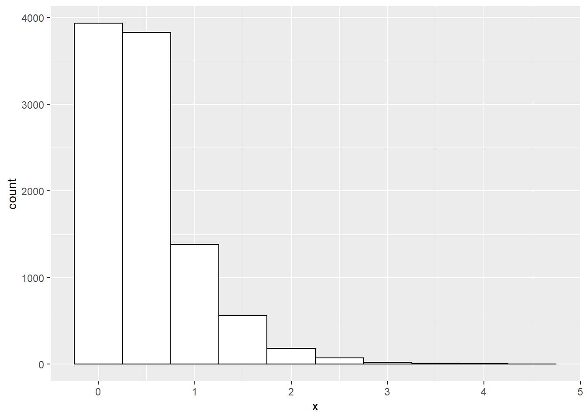

Chapter 3 Continous Probability Distributions
Learning Objectives
- Define and explain the key characteristics of the continous distributions:
- normal,
- lognormal,
- exponential,
- gamma,
- chi-square,
- \(t\),
- \(F\),
- beta and
- uniform on an interval.
- Evaluate probabilities and quantiles associated with such distributions.
- Generate discrete and continous random variables using the inverse transform method.
Theory
A reminder: R was designed to be used for statistical computing - so it handles randomness well! Using R we can guarantee reproducibility (and enhance sharability) by using the function set.seed(seed) where seed is a single value integer. Using this approach we guarantee the generation of the same sequence of random numbers everytime we call this function. Use ?set.seed to learn more about this function.
3.1 In-built probability distributions
A recap: R has in-built functions for probability distributions:
- d<distribution-name> \(:=\) density (“PDF”), i.e. \(f_X(x)\)
- p<distribution-name> \(:=\) probability distribution cumulative function (“CDF”), i.e. \(F_X(x) =\boldsymbol{P}(X \leq x)\)
- q<distribution-name> \(:=\) quantile function, i.e. return \(x\) such that \(\boldsymbol{P}(X \leq x) = p\)
- r<distribution-name> \(:=\) random deviates, i.e. (psuedo) random number generator for a given distribution
- Where <distribution-name> \(=\) Normal, uniform, lognormal, Student’s \(t\), Poisson, binormal, Weibull … see
?distributions()for more information
To give some quick examples (we will further explore these in more detail later in this chapter):
| R Code | Definition |
|---|---|
rnorm(1) |
Generates \(x_1\) where \(X \sim \mathcal{N}(0,\,1)\) |
rnorm(y, mean=10, sd=2) |
Generates \(\{y_1,\,y_2,\,\dots\}\) with \(Y \sim \mathcal{N}(10,\,2^2)\) |
runif(3, min=5, max=10) |
Generates \(\{z_1,\,z_2,\,z_3\}\) where \(Z \sim \mathcal{U}(5,\,10)\) |
dbinom(4, size=5, prob=0.5) |
Computes \(\boldsymbol{P}(X = 4)\) where \(X \sim Bin(5,\,0.5)\) |
pgamma(0.2, shape=2, rate=2) |
Computes \(F_Y(0.2)\) where \(Y \sim \mathcal{\Gamma}(2,\,2)\), i.e. \(\boldsymbol{P}(Y\leq 0.2)\) |
qexp(0.5, rate = 2) |
Determines smallest value of \(z\) for \(\boldsymbol{P}(Z \leq z) = 0.5\) where \(Z \sim Exp(2)\) |
Continous probability distributions covered
We will consider how to interact with the following continous probability distributions in R:
- Normal
- Lognormal
- Exponential
- Gamma
- \(\chi^2\)
- Student’s \(t\)
- \(F\)
- Beta
- Uniform (on an interval)
For each distribution above we will determine how to calculate:
- A random deviate following the discrete distribution \(X\),
- The probability density function (“PDF”), \(P(k_1 \leq X \leq k_2)\) for distribution \(X\) over the range \([k_1,\,k_2]\),
- The cumulative distribution function (“CDF”), \(P(X \leq k)\), and
- The quantile function to find \(k\) representing the value such that \(P(X \leq k) = p\), i.e. the pth percentile.
We will finish off with a plot of the distribution.
3.2 Normal distribution
We start with generating random deviates from the Normal distribution.
If we are interested in the standard normal, R helpfully has default argument values for \(\mu = 0\) and \(\sigma = 0\) so the function call is very concise:
## [1] 1.3709584 -0.5646982 0.3631284 0.6328626 0.4042683We can also specify our own values of \(\mu\) and \(\sigma\). With R we need to remember that the \(\sigma\) argument corresponds to the standard deviation, not the variance.
## [1] 12.741917 8.870604 10.726257 11.265725 10.808537We next look at the cumulative distribution function for a Normal distribution. In R we can calculate this using pnorm(q, mean, sd) where:
- q is the quantile of interest,
- mean is the mean, and
- sd is standard deviation.
Next we want to find the xth percentile of \(X \sim N(\mu, \sigma)\). We use the quantile function, qnorm(mu, sigma).
# Find the 99th percentile for X~N(10,2)
percentile_99 <- qnorm(0.99, 10, 2)
paste0(
"The 99th percentile of X~N(10, 2) is ",
format(percentile_99, digits = 4),
"."
)## [1] "The 99th percentile of X~N(10, 2) is 14.65."As is customary we finish with a plot of the normal distribution.
3.11 Inverse transform method
The inverse transform method is a way to generate psuedo-random numbers from any probability distribution.
One possible algorithm is as follows:
- Generate a random number \(u\) from $U (0, 1)
- Find the inverse of the desired cumulative distribution function, \(F^{-1}_X(x)\)
- Compute \(X = F^{-1}_X(u)\)
Suppose we wanted to draw 10,000 random numbers from \(X \sim Exp(\lambda = 2)\). In order to use the inverse transform method we first need to find the inverse of the CDF. For any \(X \sim Exp(\lambda)\), the inverse of the CDF is \(\frac{-log(1-x)}{\lambda}\). We can thus use the inverse transform algorithm to generate random deviates following \(X \sim Exp(2)\):
# Step 0 - to guarantee reproducibility
set.seed(42)
# Step 1 - generate 10,000 random deviates from U[0,1]
u <- runif(10000)
# Step 2 - find the inverse of the CDF: 1 - exp(-lambda.x)
# Inverse of CDF = -log(1 - x) / lambda
# Step 3 - compute X using the inverse of the CDF [from step 2] and the random deviates u [from step 1]
x <- -log(1 - u) / 2
# Plot the resulting x deviates
library(ggplot2)
df <- data.frame(x = x)
ggplot(df, aes(x=x)) +
geom_histogram(binwidth = 0.5, colour="black", fill="white")
R Practice
We finish with a comprehensive example of an univariate continous distribution question in R.